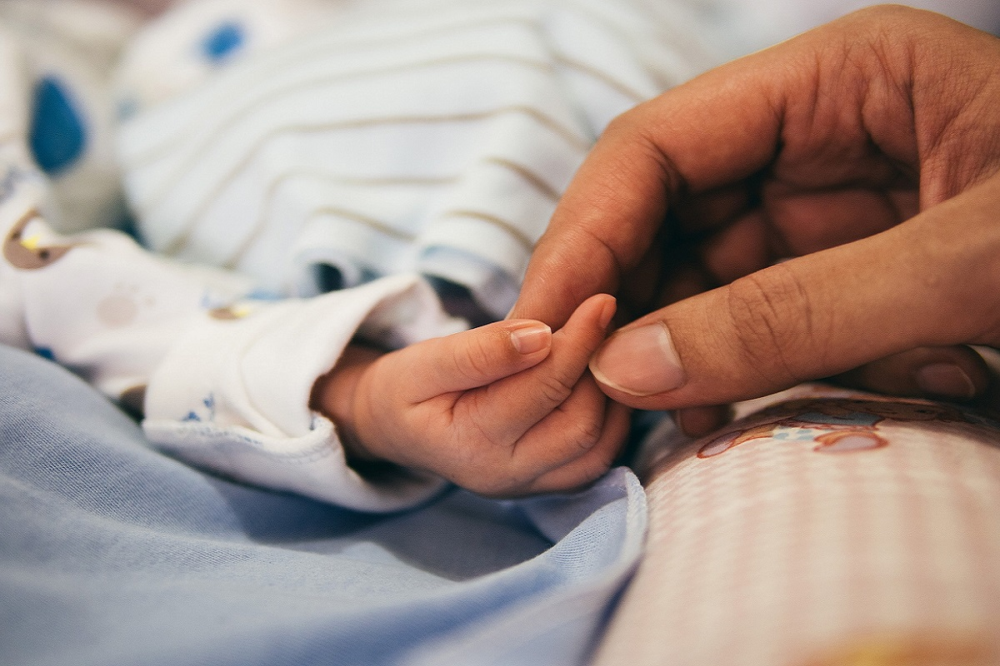
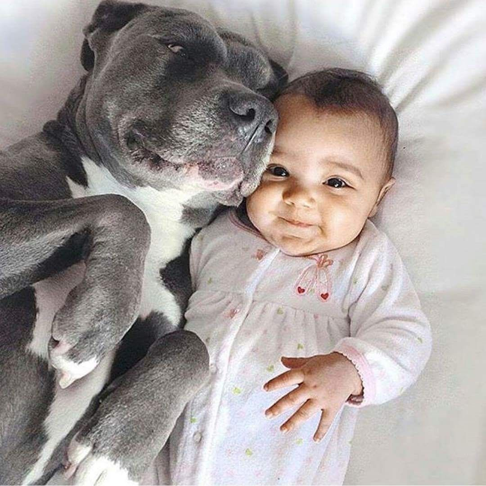

"Cuando muera quiero ser una estrella. Sólo las personas que aman de verdad son como estrellas, y su luz sigue brillando sobre nosotros después de que se hayan ido. Enséñame a vivir para que sea una estrella"
Tan pequeños, tan frágiles, y con ellos son con los que empezamos a dar los primeros pasos. No paramos, vamos como locos, sin rumbo, sin preocupaciones.
"Las personas mayores nunca pueden comprender algo por sí solas y es muy aburrido para los niños tener que darles una y otra vez explicaciones."
Es por ello que los bebés ven el mundo de otra forma, sin maldad, pura inocencia. Ven luces de colores y se maravillan, ven gente haciéndoles caso y se ríen, por eso cuando se crece, no hay que olvidar esa inocencia vista del mundo. Necesitan del soporte de los adultos para poder evolucionar, crecer y aprender. Siempre van a buscar una referencia, y esa referencia son los padres, que serán aquellos que nunca van a separar un ojo de ellos.
Antes de empezar a andar, siempre van a necesitar cierto apoyo, ya que solos no lo pueden conseguir, y qué mejor apoyo que el de sus padres.
Estos son los pequeños seres humanos creciendo, y aprendiendo. Con ayuda al principio para que no se caigan, los bebés dan sus primeros pasos por este mundo, pisando fuerte.
No hay que olvidar al mejor amigo del hombre, y por ende también de los bebés. Los perros. Van a ser los mejores protectores de estos pequeños.
"Me pregunto si las estrellas se iluminan con el fin de que algún día, cada uno pueda encontrar la suya."
"Viví mucho con personas mayores y las he conocido muy de cerca, pero esto no ha mejorado demasiado mi opinión sobre ellas."
"Las personas mayores nunca pueden comprender algo por sí solas y es muy aburrido para los niños tener que darles una y otra vez explicaciones."
La finalidad de este blog es aprender y descubrir nuevas cosas de estas pequeñas personitas. El futuro tan incierto que existe actualmente apunta a que hay que extremar las condiciones en las que debemos proteger a los bebés particularmente, sin descuidar tampoco a nuestros mayores, que tiempo atrás fueron bebés.
Para cualquier duda, puedes ponerte en contacto con nosotros a través del correo o haciendo click en el icono del correo.
valhalla@valhalla.es